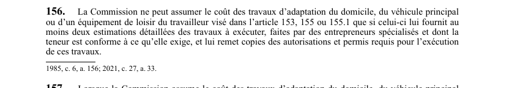

art-156-LATMP : conditions de remboursement des travaux d'adaptation
Un article du wiki ⚖️ Recueil législatif
🌐 LegisQuébec · 📄 PDF officiel (page 42)
Texte officiel : capture du PDF

🔗 Ouvrir a cette page : LATMP.pdf : page 42 · texte a jour au 20 février 2024
📚 Source légale : 1985, c. 6, a. 156; 2021, c. 27, a. 33. · LégisQuébec
En bref
La Commission ne peut assumer le coût des travaux d'adaptation du domicile, du véhicule principal ou d'un équipement de loisir du travailleur visé dans l'article 153, 155 ou 155.1 que si celui-ci lui fournit au moins deux estimations détaillées des travaux à exécuter, faites par des entrepreneurs spécialisés et dont la teneur est conforme à ce qu'elle exige, et lui remet...
Voir aussi
- art. 153 · obligation : adaptation domicile travailleur peut.
- art. 155 · faculté : 155, L'adaptation du véhicule principal du travailleur peut étre faite si ce travailleur a subi une atteinte permanente grave a son intégrité physique et si cette adaptation est nécessaire, du fait de sa lésion professionnelle.
- art. 155.1 · faculté : adaptation équipement loisir travailleur.
- art. 154 · interdiction : lorsque le domicile d'un travailleur ne peut être adapté à sa capacité résiduelle, la CNESST rembourse les frais de déménagement vers un domicile adapté ou adaptable, jusqu'à 3 000 $.
- 🔧 Modifié par : LMRSST art. 33 · remplace art.
- ↑ Loi : LATMP
Pages qui pointent ici (2)
- art-157-LATMP, lorsque commission assume coût Recueil législatif
- art-33-LMRSST, mod. art. 156 LATMP Recueil législatif